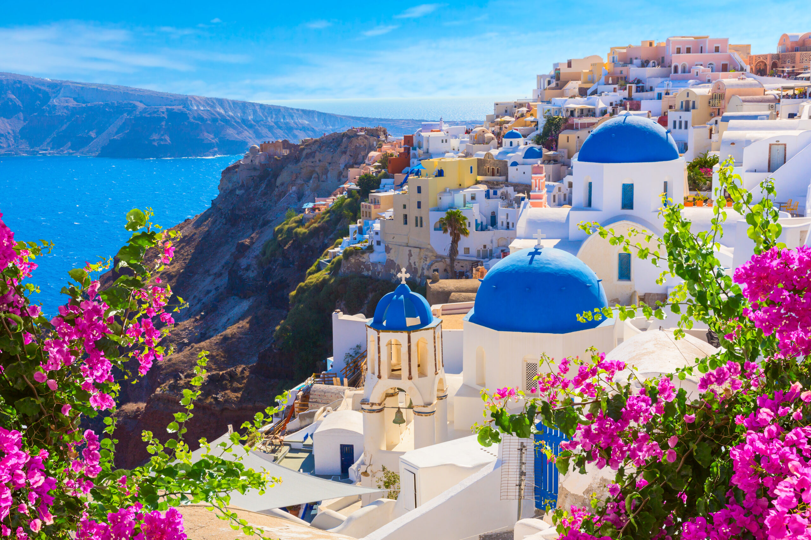
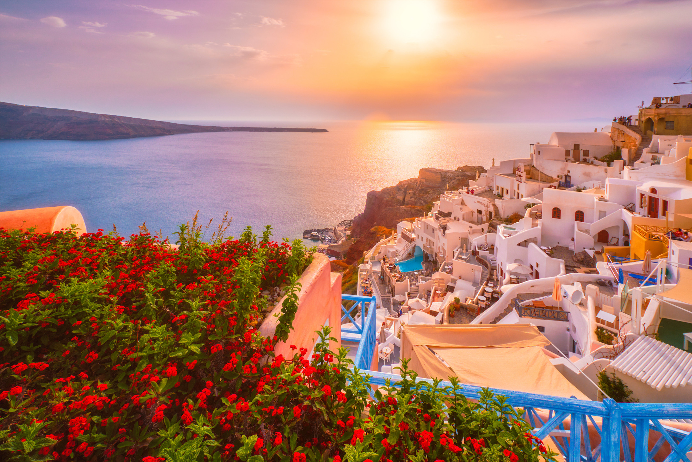
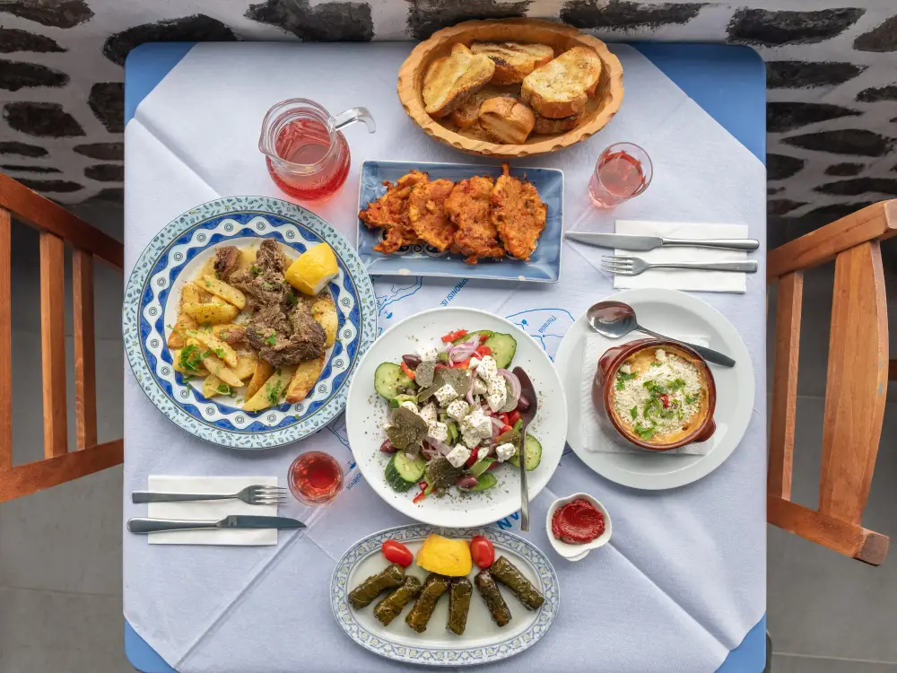

Where would you go?
If I were take a vacation, I would want to travel to Santorini, Greece. Santorini is a stunning island known for its white and blue villages, breathtaking ocean views, and volcanic landscapes. The cobblestone streets and beautiful architecture create a photoworthy environment which is perfect for a relaxing getaway.

Image source: Fedykovych, P. (2025). 10 best beaches in Santorini, Greece. Beach. https://www.beach.com/santorini/
What would you do?
Activities are an important aspect of vacationing. During my trip, I would like to explore the island's natural beauty and culture. Santorini offers plenty of activities of all types that can make the trip both exciting and memorable.
Potential activities I would consider doing while visiting Santorini:
- Watch the famous sunset in Oia
- Visit Red Beach and Perivolos Beach
- Go wine tasting at local wineries
- Explore Akrotiri archaeological site
- Dive in the waters of Palia Kameni

Image source: Yatra. (n.d.). Satorini tour packages. Yatra. https://www.yatra.com/international-tour-packages/holidays-in-santorini

Image source: Anifanty, V. (2023). The magic of Santorini: Tips for a perfect sunset experience. getGreece. https://www.getgreece.com/post/the-magic-of-santorini-tips-for-a-perfect-sunset-experience
What would you eat?
Santorini is known for its unique cuisine influenced by its volacanic soil and fresh ingredients. Produce unique to the island include fava, cherry tomatoes, katsounia (cucumbers), white eggplants, and chlorotyri (goat cheese). I would like to enjoy traditional Greek dishes made with the island's local produce and authentic recipes, such as Moussaka.
Other Santorini specialties I would like to try:
- Domatokeftedes (tomato fritters)
- Spanakopita (spinach pie)
- Melitinia (sweet cheese pastries)
- Local Santorini wines

Image source: Fuller-love, H. (2022). I’ve been visiting Santorini, Greece for 15 years — here are 9 restaurants where you’ll find the most authentic food. Business Insider. https://www.businessinsider.com/best-restaurants-where-to-eat-santorini-greece